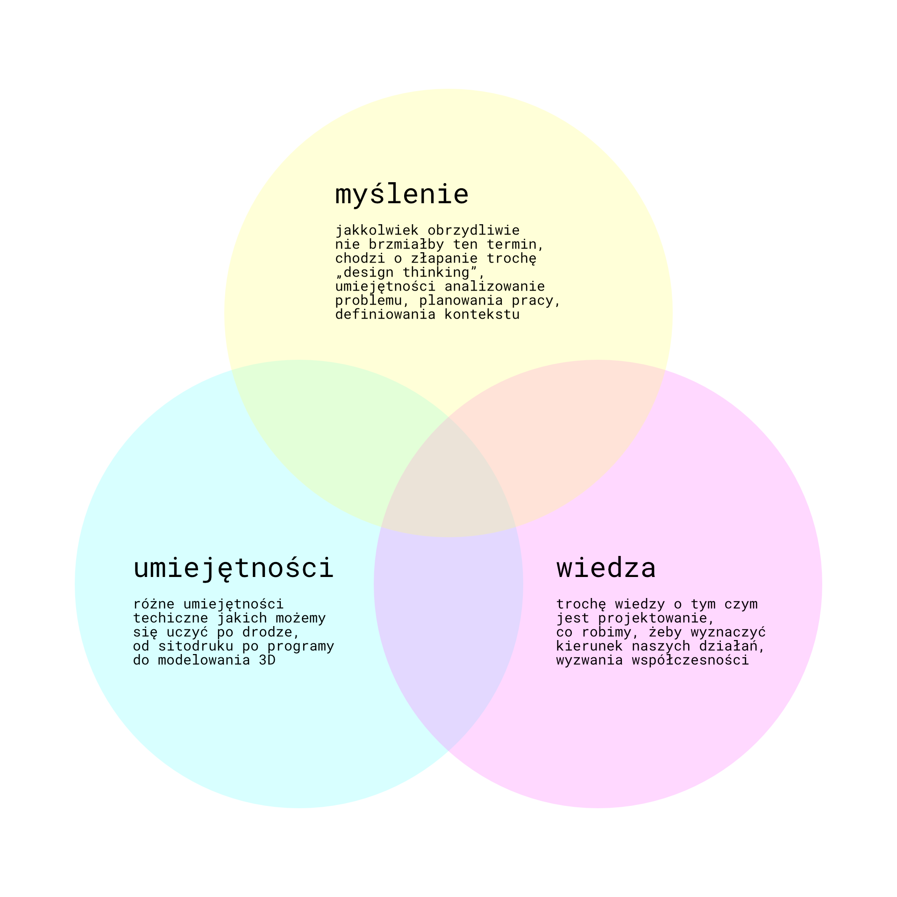

Tekst przed Tobą to mieszanka wycinków i tekstów znalezionych w innych miejsach i własnych przemyśleń. Można go czytać jako linearny zwój albo rozłożysty hiperstekst.
Design jest jednym z głównych narzędzi kapitalizmu, obok pracy, w celu tworzenia wartości produktów, czyli sprzedawania tej samej rzeczy w wyższej cenie, czyli z wiekszym zyskiem. „Inwestycja” w pracę prekariusza szybko się zwraca.
Design jest tym co zmienia commodity w product, product w service, service w experience.
Stworzony przez pracę rolnika i przyrodę surowiec, dobro, jakim są ziarna kawy nie jest wiele wart na rynku. Projektant tworzy markę, branding, surowiec staje się produktem, ziarna kawy nie są już anonimowe, trzeba za nie więcej zapłacić. Następnie projektowana jest usługa, ktoś tę samą kawę robi za Ciebie, płacisz za pracę najemną i za projekt tej usługi, narzędzi i maszyn. Przykładem może być Nespresso, które sprzedaje usługę, wynajmuje swoje ekspresy firmom i osobom, kawę zamyka w „kapsułkach” tworząc nimb innowacyjności. Ostatni etap to doświadczenie. Konsument płaci jeszcze więcej za samą możliwość przeżycia picia kawy w znanej kawiarni, na szczycie wieży Eifella, w miejscu gdzie pracownik najemny nie tylko robi kawę, ale wita, uśmiecha się do konsumenta i pamięta jak się konsument nazywa. To doświadczenie również jest zaprojektowane przez jakiegoś projekanta, zachowaniem pracownika steruje księga-algorytm określająca kiedy się uśmiechnąć i jaką uśmiechniętą buzię narysować na kubku obok imienia konsumenta. W całym tym procesie ziarna kawy są dokładnie te same, ilość włożonej pracy również jest zbliżona. Jedyne co się zwiększa to zysk i ilość włożonego do kawy designu.
Z tej perspektywy, design może być postrzegany jako narzędzie generujące spektakl. Spektakl to co sprzeda się najlepiej, a proces obtaczania, owijania ziarna kawy w historię, narrację, sentyment, nie jest niczym innym niż malowaniem wokół tego ziarna kawy spektaklu. Istota (prawda?) kawy wypitej w domu jest taka sama jak istota kawy w paryskiej kawiarni, to spektakl się zmienia.
Projektowanie, inaczej zwane planowaniem, jest podstawową funkcją ludzkiego mózgu. Odbywa się każdym razem gdy osoba planuje podróż komunikacją miejską, komponuje utwór muzyczny, gotuje obiad. Mało jest czynności człowieka, które nie wymagają projektowania. Z drugiej strony design/dizajn i jego wydźwięk w społeczeństwie, sposób użycia w mediach jest nacechowany w bardzo konkretny sposób. Jaka jest różnica?
W gronie τέχνη oraz artes mechanicae wyróżniamy takie dziedziny jak: architektura, krawiectwo, kowalstwo, rzeźba. Przez długi czas dziedziny te był postrzegane jako podrzędne względem artes liberales, takich jak retoryka, logika, astronomia itd.
Tak się składa, że zaczęło się to zmieniać wraz z początkiem Renesansu, który wiele osób postrzega również za początek kapitalizmu. Wraz z chwilą, w której rzeźbiarze, architekci i malarze zyskiwali nowy status, zabiegali o postrzeganie swoich profesji jako "szlachetnych", wymagających intelektualnie, również innym rzemieślnikom udało się trochę z tego prestiżu uszczknąć.
Ale prawdziwą rewolucję, a może po prostu początek designu jako takiego, wyznacza przemysł i produkcja masowa. Przede wszystkim alienacja pracy. Skoro produkty nie są już uzależnione od pracy jednego rzemieślnika, który produkt wykonuje w dużej mierze od początku do końca, a jest wykonywana przez robotników na taśmie produkcyjnej... To kto decyduje o formie produktu? Na pewno nie właściciel fabryki.
Produkcja masowa sprawiła, że powstaje projektant, zawód którego do tej pory nie było, który wszedł w drabinę hierarchii fabryki na zaskakująco wysokiej pozycji. Osoba, której potrzeby istnienia nikt do tej pory nie podejrzewał. Być może najprzykrejszą formę ten rozdział pracy odbył się w przemyśle drukarskim. Do tej pory, osobą, która decydowała o kształcie tekstu, był drukarz. Osoba składająca tekst, odlewająca czcionki, przeprowadzająca cały proces produkcji od początku do końca. Osoby, które projektowały czcionki to również byli drukarze. Osoby, które wydawały książki to również byli drukarze. Wraz z drugą połową XIX wieku obserwujemy rozdział tego zajęcia na wiele pomniejszych. Kim innym jest zecer, odlewnik, wydawca, projektant typografii i projektant layoutu. Wydawca staje się właścicielem, to on posiada drukarnię. Projektant krojów pisma i projektant wyglądu książki nagle podskakują do rangi artystów, intelektualistów, białych kołnierzyków. Zecer i odlewnik z wysoce wykwalifikowanych rzemieślników, których praca wymaga ogromnej wiedzy i doświadczenia, stają się robotnikami.
Dwudziesty wiek to już projektanckie eldorado, dizajn wchodzi w każdą przestrzeń jaką tylko da się zająć.
Pejoratywne znaczenie dizajnu, jako czegoś co jest przerostem formy nad treścią, przekombinowane, drogie bez powodu, aroganckie i zarozumiałe jest już utrwalone w języku. Nie mam zamiaru walczyć z tym znaczeniem, a nawet wydaje się być ono całkiem pomocne w tej dyskusji. Przygotowując na inne zajęcia referat o nowych warszawskich wiatach przystankowych, zaprojektowanych zresztą przez wykładowców mojego wydziału, natknąłem się na taki komentarz w internecie:
Zwraca tutaj moją uwagę przede wszystkim ten zwrot "... projektowany (o przepraszam Dizajnowany wręcz)". Wyraźnie widać opozycję między projektowaniem, które ma być celowe, racjonalne, funkcjonalne, a dizajnowaniem, które jest narzędziem kapitalistycznym, które jest metodą sztucznego zwiększania wartości rynkowej, zysku i powierzchni reklamowej. Zdaje się, że dizajnowanie to określenie wręcz stworzone dla tego tekstu.
Design jest nieodrodnym dzieckiem nowoczesności. Design narodził się wraz z racjonalizmem i postawą krytyczną. Postawa krytyczna każe nam nic nie brać za pewnik, nie uznawać autorytetów, podchodzić do każdego problemu od nowa. Dokładnie tym samym jest design. Projektant stara się podchodzić do każdego problemu na nowo, "innowacja" polega właśnie na tym gdy wymyślisz otwieracz do wina na nowo, zmieniając jego formę i sposób działania, nie za bardzo wiadomo po co. Projektant stara się spojrzeć racjonalnie na problem, racjonalnie go przeanalizować i zaproponować racjonalne rozwiązanie. Idąc w tę stronę jeszcze dalej, osobiście stawiam tezę, że dobre rozwiązanie w określonym kontekście, dla określonego problemu jest tylko jedno. W zeszłym roku starałem się stworzyć wokół tej tezy projekt algorytmu, mający na celu wyeliminowanie projektanta. Skoro przy odpowiednich założeniach, określonych wymaganiach i ograniczeniach, dochodzimy zawsze do jednego rozwiązania, oznacza to, że możemy zastąpić ten proces algorytmem.
Ale to była tylko jedna z możliwych ścieżek. Rozważałem również zaprojektowanie mechanizmu, który w jakiś sposób wyabstrachowałby pewne archetypowe obiekty. Następnie chciałem stworzyć metodę na zmianę tych obiektów wraz z czasem, wraz ze zmieniającym się kontekstem. Zaprojektować mechanizm ewolucji stołka. Nieistotnym było dla mnie czy ten mechanizm będzie maszynowy czy zupełnie ludzki. I wtedy się zorientowałem, że ten mechanizm już istnieje i nazywa się tradycja. W epoce sprzed designu, rzemieślnik uczył się wykonywać pewne obiekty od swojego nauczyciela. Wraz ze zmieniającymi się czasami, nowymi obyczajami, materiałami, narzędziami, kolejni uczniowie zmieniali delikatnie wzory, których się nauczyli, a potem przekazywali je dalej swoim uczniom. Tradycja rzemieślnicza jest więc przykładem dokładnie tego, memetycznej ewolucji archetypów przedmiotów. Design z kolei to postawa rewolucyjna. Nie uznaje istnienia świata przed nim i po nim. Projektant zawsze stara się stworzyć rozwiązanie optymalne, co więcej - pozbawione projektanta, obiektywne.
Postawa projektanta wzornictwa przemysłowego wobec alienacji pracy jest skomplikowana. Projektant podobnie jak artysta posiada przynajmniej częściowe prawa bycia twórcą, osobą powołującą rzecz do istnienia i ta właściwość teoretycznie chroniona jest prawnie przez coś z nazywamy prawem autorskim. Równocześnie obiekty, które projektuje są najczęściej produkowane masowo, nie są unikatami, co więcej nie są tworzone przez niego a przez kogoś innego, Bezimiennego, albo maszynę. Jego relacja z tworzonym przedmiotem jest więc inna niż artysty, inna niż rzemieślnika, inna niż robotnika. Jest on odpowiedzialny w jakimś stopniu za istnienie tego przedmiotu, a już na pewno za to w jakiej formie istnieje.
Jego stosunek pracy najczęściej można określić jako out-sourcing, prekariat, freelancerstwo. Współczesny projektant projektuje wszystko, w wielu różnych firmach, wiele różnych rzeczy. Nie jest zatrudniony na stałe, nie tworzy emocjonalnego stosunku z fabryką, jej pracownikami, przedmiotami. Oczekuje się od niego jednak tego, że do każdego kolejnego produktu podejdzie z taką samą dokładnością, musi w krótkim czasie zgłębić produkt, zrozumieć go, ludzi, którzy go sprzedają i którzy go kupują. Musi być więc mistrzem empatii, mistrzem współodczuwania, wchodzenia w cudzą skórę.
Projektant nie projektuje dla siebie, zawsze projektuje dla innych, rozwiązuje problemy innych. Czasem mogą to być problemy społeczne, a czasem mogą to być problemy właściciela fabryki. Musi więc oddać swoją myśl w posiadanie komuś innemu. Jako projektant, nie możesz narzucać producentowi swojej wizji, to ty jesteś narzędziem w realizacji wizji producenta. Projektant więc nie tylko wchodzi w cudzą skórę, on jest też skórą w którą wchodzi duch kogoś innego, jest rodzajem szamana, medium, narzędziem w rękach woli kogoś innego. Pod tym względem przypomina robotnika w fabryce.
Wikipedia o prawie własności intelektualnej
Prawo własności intelektualnej jest jednym z najgorszych wynalazków "Zachodu". Trudno dziś ocenić, jak bardzo spowalniło już rozwój nauki i technologii, nie mówiąc o rozwoju kultury, którego nie da się pewnie nawet oszacować. Innowacja w nauce i kulturze zawsze przejawiała się raczej w małych zmianach niż wielkich odkryciach. Gutenberg nie był wynalazcą, wprowadził kilka ulepszeń do technologii, która już istniała i połączył to wszystko razem. Kolejni drukarze w Europie nie musieli leasingować od niego maszyn ani kupować know-how'u. Nauka od zawsze opierała się na cytowaniu, czyli kradzeniu pracy innych naukowców. Największe, najbardziej innowacyjne odkrycia ostatnich 50 lat to nie odkrycia kapitalistycznych korporacji (które mają ponoć "incentive" do bycia innowacyjnymi) a praca publicznych, państwowych ośrodków badawczych, a przede wszystkim niestety militarnych. Prawo własności intelektualnej służy tylko i wyłącznie właścicielowi tych praw (bo nie autorowi) do generowania zysków. Projektant wzornictwa sprzedaje swoje autorskie prawa majątkowe, są one obiektem handlu, żeby zarobić na życie. Często jednak również figura projektanta jest wykorzstywana przez producenta do sprzedania produktu.
Na szczęście wraz z ofensywą praw autorskich, zaczęliśmy tworzyć narzędzia przeciwko nim. W świecie komputerów, otwarte oprogramowanie, otwarte kody źródłowe są praktyką istniejącą praktycznie od zawsze. Nie jest łatwo. Powstają co raz to kolejne, nowe licencje mające zapewnić wolność oprogramowania i twórczości. Kapitaliści robią wszystko co mogą, żeby wykorzystać luki prawne w tych licencjach i w jakiś sposób zarobić pieniądze na pracy kogoś, kto celowo chciał oddać swoją pracę wszystkim.
Zobacz też: Alienacja | Wynalazek designu
Więc co robić? Co zrobić, żeby design i projektant przestali być narzędziami w rękach kapitalistów?
Prostą odpowiedzią jest - nie projektować dla kapitalistów. Bronić się odmawiając. Ograniczyć swoje pole projektowania do projektowania społecznego, dla instytucji kultury, NGOsów, może przekształcić swoją praktykę projektową w praktykę artystyczną. Wydaje mi się, że to nie wystarczy. Nawet jeśli ograniczymy tak swoją praktykę, w pewnym momencie jeśli nie będziemy ostrożni, nasz własny wizerunek stanie się ofiarą kapitalizmu. Sława jest tym co spotyka niektórych nieszczęśliwych projektantów i jest prostą drogą do utraty samego siebie. Tak jak już mówiliśmy w Prawach autorskich kapitaliście starają się bez przerwy monetyzować nawet te rzeczy, których autorzy celowo oddali wszystkim. Dlatego moim postulatem jest nie tylko tworzyć wszystko na otwartej licencji, oddawać wszystko do domeny publicznej gdy tylko powstanie i zastrzegać, że każdy może wziąć i zmieniać, ale nigdy nie można na tym zarabiać pieniędzy (tak zwany copyleft w odróżnieniu od copyrightu), potrzebna jest również anonimowość autorów. Pozbądźmy się swoich tożsamości, zastąpmy je pseudonimami. Wydaje się, że takie wyrzeczenie się samego siebie, jest jedyną drogą do odalienowania się.
Kolejną ważną rzeczą jest w ogóle wymknąć się obiegowi pieniądza. Nie robić rzeczy dla pieniędzy, być szczodrym, dawać dawać dawać dawać. Jeszcze więcej dawać. Nie być nigdy samotnym, być zawsze kimś, zawsze robić coś wspólnie, zawsze kolektywnie. Niech każdy projekt jaki wymyślisz będzie umieszczony za darmo w internecie dla innych do skopiowania, wzięcia, zmienienia.
Nie wiem jak projektant może zarabiać na życie poza kapitalizmem. Być może jedyną metodą jest sprzedawać to co się zrobiło. Nie sprzedawać pomysłów, ale obiekty, z materiałów, które się kupiło i własną ręką obrobiło. Czyli stać się na powrót rzemieślnikiem.
Z drugiej strony, pewna część mnie już samą produkcje uważa za złą. Powinniśmy przestać produkować bez sensu. Musimy przestać produkować bez sensu.
Pozostaje jeszcze jedna możliwość dla projektanta by istnieć i może nie tyle starać się przetrwać, ale na pewno walczyć z kapitalizmem. Edukacja. Zrzucić z designu jarzmo dizajnu. Zdemokratyzować praktykę projektowania, pokazać ludziom, że każdy projektuje cały czas. Zdjąć maskę "edukacji wyższej" i "specjalizacji" z moich umiejętności, pokazać, że nigdy niczego trudnego ani zbyt mądrego się nie nauczyłem, pokazać ludziom, że mogą robić to samo.
Zobacz też: Alienacja | Wynalazek designu
Wiemy, że szkoła w Polsce nie jest darmowa. Wiemy, że nie wszyscy mają równe szanse. Widzimy, że edukacja ma więcej wspólnego z biznesem niż prawdziwym zdobywaniem wiedzy. Chcemy to zmienić.
Autonomiczna Przestrzeń Edukacyjna to kolektyw, który za cel stawia sobie wyrównywanie dostępu do demokratycznej edukacji. Prowadzimy nieodpłatne zajęcia dostępne dla wszystkich zainteresowanych. Organizujemy wydarzenia o charakterze edukacyjnym. Współpracujemy z różnymi grupami walczącymi o sprawiedliwość społeczną.
Wychowani i wychowane przez publiczną edukację, proponujemy alternatywę dla jej skostniałych struktur, panujących w niej hierarchii i ukrytego programu, wychowującego do społecznego posłuszeństwa. Chcemy dzielić się wiedzą z innymi, chcemy przyjmować wiedzę od innych.
Wierzymy, że tylko oddolna praca u podstaw i edukacja mogą zmieniać rzeczywistość. Nie pobieramy za prowadzenie zajęć i działalność w APE żadnych pieniędzy. Nie otrzymujemy żadnych instytucjonalnych dotacji i dofinansowań.
Dbamy o komfort osób uczęszczających na zajęcia – nie mamy i nie będziemy mieć zgody na przejawy seksizmu, rasizmu, klasizmu, homo- i transfobii i wszystkich innych wykluczających postaw.
Fascynują nas edukacja wolnościowa i pedagogika krytyczna. Uważamy, że edukacja nieformalna stanowi jedyną alternatywę dla zniechęcającej do zdobywania wiedzy edukacji szkolnej. Nie uczymy się na pamięć „polaka małego”, nie przepisujemy notatek z tablicy, ani nie stosujemy innych średniowiecznych metod.
Autonomiczna Przestrzeń Edukacyjna to również wspólnota tworzona przez edukatorów i edukatorki, uczniów i uczennice, członków i członkinie kolektywu. Ty też możesz do niej dołączyć. Zapraszamy do włączenia się w działania naszej grupy i uczestnictwo w zajęciach!
Interesującą koncepcją, którą operuje APE jest pedagogika konfliktu. Najprościej mówiąc, chodzi o przedstawienie edukacji i wiedzy w perspektywie konfliktu, klasowego, historycznego, motywowanego władzą i pieniędzmi. Dzięki zyskaniu tej perspektywy, możemy podejść do edukacji w trochę inny sposób - aktywny. Nauczanie i przekazywanie wiedzy przestaje być tylko sposobem na tworzenie świadomości klasowej, poprawę bytu ludzi, zwiększanie ich szans - staje się celem i walką samą w sobie. Pozwala uświadomić sobie rolę nauczania i uczenia się nie tylko jako narzędzia, ale wartości.
Fragmenty z książki Język wzorców Christopher Alexander, oryginalnie wydano w 1977 rok.
W społeczeństwie, w którym dużą wagę przywiązuje się do nauczania, dzieci i uczniowie – a także dorośli – stają się bierni i tracą zdolność do samodzielnego myślenia i działania. Twórcze, aktywne jednostki rozwijają się tylko w społeczeństwie, w którym uczenie się jest ważniejsze od nauczania [...]
[...] Zamiast trzymać się sztywnego, ograniczonego do jednego miejsca systemu nauczania obowiązkowego, działaj stopniowo na rzecz decentralizacji procesu nauczania i wzbogacaj go przez kontakt z wieloma miejscami i ludźmi w całym mieście: poprzez warsztaty i kursy, nauczycieli domowych lub wędrownych, fachowców, którzy chętnie przyjmą młodzież do pomocy, starsze dzieci uczące młodsze, muzea, grupy podróżującej młodzieży, seminaria naukowe, warsztaty przemysłowe, starszych ludzi i tym podobne. Uznaj wszystkie te sytuacje za kręgosłup procesu uczenia się. Nadzoruj je, opisuj i popularyzuj za pomocą miejskiego "programu nauki". Następnie pozwól, by studenci, dzieci i ich rodziny oraz sąsiedztwo wspólnie utkali dla siebie sieć, z opłatami szkolntmi wznoszonymi za pomocą standardowych talonów opłacanych z podatków komunalnych. Zbuduj nowe obiekty związane z edukacją, żeby rozszerzyć i wzbogacić tę siatkę.
Zobacz też: APE | Uniwersytet jako targowisko
Fragmenty z książki Język wzorców Christopher Alexander, oryginalnie wydano w 1977 rok.
Skoncentrowane w jednym miejsciu, odizolowane od otoczenia niczym klasztory, uniwersytety prowadzą pełną ograniczeń politykę przyjmowania na studia i sztywne procedury dyktujące, kto może prowadzić wykłady. To zabija możliwość uczenia się.
Pierwsze uniwersytety średniowieczne były zwykłym zbiorowiskiem nauczycieli, którzy przyciągali studentów, ponieważ mieli im coś do zaoferowania. Uczelnie były targowiskami idei. Znajdowały się na obszarze całego miasta, a ludzie mogli poszukiwać ided i uczyć się tego, co ich interesowało. Współczesne, wyobcowane i zbiurokratyzowane uniwersytety działają wręcz odwrotnie – tłumią różnorodność i ostrość poglądaów, a także ograniczają szansę studentów na poszukiwanie nowych idei.[...]
1. Każdy ma wstęp na zajęcia. Przede wszystkim uniwersytet-targowisko nie wprowadza biurokratycznej procedury rekrutacji. Każda osoba w dowolnym wieku może się zgłosić i uczestniczyć w zajęciach. Lista zajęć powinna być szeroko dostępna: w gazetach i w radiu, na plakatach, w miejscach publicznych w całym regionie.
2. Każdy może prowadzić zajęcia Na uniwersyteckim targowisku każdy może zaproponować program swoich zajęć. Nie ma trwałego i sztywnego podziału na nauczycieli i resztę obywateli. Wykłady są prowadzone, gdy lydzie zgłoszą chęć uczestniczenia w nich. Z pewnością pojawią sięgrupy nauczycieli oferujących wspólny program zajęć. Wykładowcy mogą samodzielnie ustalać warunki wstępne i regulować zapisy. Jednak – jak na prawdziwym rynku – popyt kreują studenci. Jeżeli przez pewien czas nikt się nie zgłosi, by wziąć udział w zajęciach danego profesora, będzie on musiał zmienić swoją propozycję albo znaleźć inny sposób zarabiania na życie
[...] Ustanów uniwersytet jako targowisko wyższej edukacji. Taka koncepcja społeczna oznacza, że uniwerystet jest otwarty dla ludzi w każdym wieku, którzy chcą studiować w pełnym lub częściowym wymiarze godzin albo kończyć pojedyncze kursy. Każdy może zaoferować swój program zajęć. Każdy może brać udział w zajęciach. Jako przestrzeń fizyczna uniwersyteckie targowisko ma centralne skrzyżowaie, wokół którego stoją główne budynki i biura, a sale wykładowe i laboratoria rozchodzą się z tego punktu jak kręgi na wodzie – najpierw skoncentrowane w małych budynkach wzdłuż ulic pieszych, a dalej coraz bardziej rozproszone i wmieszane w tkankę miasta.
Zobacz też: APE | Sieć uczenia się
Przed ostatnim semestrem ASP wyjechałem na semestr na Islandię do Listaháskóli Íslands. Wiele się tam nie nauczyłem, ale zostały mi zadane dwa ważne pytania:
Nikt nigdy w tak... zgrabny, bo chyba to mnie najbardziej w tym urzekło, sposób nie skonfrontował mojej praktyki we wzornictwie z polityką. I to tylko w mojej głowie. Nagle wszystko okazało się być bardzo jasne. Wszystko jest uwikłane w politykę, każda decyzja jest decyzją polityczną, a już szczególnie decyzja projektowa. I chociaż nigdy nie ciągnęło mnie do designu kapitalistycznego, teraz poczułem prawdziwą odrazę. Zacząłem fantazjować nad wymaganiami, które musiałby spełniać projekt i projektant by wymknąć się kapitałowi. To był początek tego tekstu.
Zobacz też: APE
Od początku października oprócz zajęć na ASP chodzę również na zajęcia w APE. Wybrałem zajęcia o szerokiej tematyce: Geografia krytyczna, Logika, Bazy danych, Odtrutka z historii, Python dla średniozaawansowanych. Jeszcze wcześniej zacząłem działać w Extinction Rebellion i wydarzenia tygodnia ogłoszenia Rebelii na koniec września otworzyły w mojej głowie zupełnie nową perspektywę. Zobaczyłem co można osiągnąć działając poza systemem, kolektywnie, wspólnie, oddolnie. Chciałem być tego częścią. Metody według których działają obie organizacje są pokrewne, wywodzące się z tradycji anarchistycznej. Przede wszystkim przekonałem się, że takie działania są w ogóle możliwe. Przekonałem się, że nie trzeba robić rzeczy tak jak od zawsze mnie uczono, że strach przed demokracją to strach nieuzasadniony, że argumenty przeciwko wspólnotowości, które przychodzą do głowy każdemu polakowi wychowanemu w tym społeczeństwie, to argumenty na poziomie obrońców jedzenia mięsa i samochodów w centrum miast.
W grudniu wpadł mi do głowy pomysł rozpoczęcia własnych zajęć. Nie mam zbyt wiele ludziom do zaoferowania, poza tym przeklęty dizajnem.
W taki sposób opisałem zajęcia dla nowych uczestników i uczestniczek:
Możliwe, że ktoś na tych zajęciach zbuduje stół, ktoś inny robota, a Ty interfejs aplikacji.
Na zajęciach będziemy wspólnie projektować dla siebie i innych, z myślą o ludziach i o przyrodzie, z materiałów odzyskanych, uratowanych i znalezionych. Przeprowadzimy pełen proces projektowy od problemu po realizację. Zaczniemy myśleć jak projektanci i nauczymy się nowych umiejętności potrzebnych do wytworzenia naszych rozwiązań.
Poza tym zadamy sobie pytania:
• Czy design może zbawić świat?
• Czy produkcja to grzech?
• Co to jest projektowanie?
Jeśli będziemy mieć taką ochotę nauczymy się: modelowania 3D, odlewania ceramiki, sitodruku, Arduino oraz absolutnie czegokolwiek. Zajęcia prowadzi Bartek.
Zobacz też: APE |
To w jaki sposób zajęcia będą się odbywać będzie zależało od uczestników i uczestniczek. Chciałbym, żeby jak najwięcej decyzji było podejmowanych kolektywnie. Jak już w krótkiej historii projektowania pisałem, uważam, że każdy człowiek projektuje bez przerwy. Nie mam zamiaru więc ich tego uczyć, jedyne co spróbuję im przekazać, to pewne techniki i narzędzia do zapanowania nad tym procesem. Kolejnym ważnym elementem zajęć jest pewna radykalność. Moją osobistą ambicją jest, żeby na potrzeby zajęć nie została kupiona ani jedna rzecz. Będę zachęcał osoby chodzące na zajęcia, żeby starały się wszystko zrobić z materiałów znalezionych, odzyskanych, zrecyklowanych, uratowanych, albo zupełnie nie projektować obiektów materialnych. Tematy i problemy, które będziemy poruszać będę skupione na uczestnikach i uczestniczkach, ich otoczeniu, najbliższych, społeczeństwie. Będziemy starać się rozwiązywać problemy globalne i lokalne.
Przygotowałem parę propozycji zadań, którymi możemy się zająć w ramach zajęć. To czy w ogóle chcemy, któreś z nich robić, w jakim trybie, w jakich zespołach, w jakim czasie jest jeszcze do uzgodnienia.
Archwium to zadanie odrobinę zapoznawcze. Można by wręcz powiedzieć, że intymne, przynajmniej w mojej głowie. Chciałbym, żeby osoby chodzące na zajęcia pomyślały o kolekcjach, zbiorach, muzeach, archiwach, pamiętnikach. Chciałbym im pokazać różne archiwa, od Queer Archive Institute Karola Radziszewskiego po Globalny Bank Nasion wykuty w wiecznej zmarzlinie. Zastanowimy się co zbieramy, po co zbieramy, jak zbieramy. Każdy zbiór ma jakąś formę, zadaniem uczestników i uczestniczek będzie odnaleźć te formę. Być może zaprojektować sposób dodawania nowych archiwaliów, przechowywania, katalogowania. Może archiwum stanie się czymś więcej, niż tylko sumą swoich elementów?
Domek fiński, który jest główną kwaterą APE został wyremontowany wysiłkiem organizacji, które w nim urzędują (również blok klimatyczny, w tym XR). Popularnie nazywany jest Kurnikiem. Nie da się jednak ukryć, że ma jeszcze bardzo wiele niedociągnięć, a jego forma nie jest idealna dla prowadzenia w nim tylu zajęć. Kolejnym zadaniem, byłoby więc zajęcie się domkiem. Próba ulepszenia domku, znalezienia jakiegoś problemu, który da się rozwiązać, zaprojektowania tego rozwiązania. Oprócz oczywistych korzyści dla wspólnoty, projekt ten jest ważny, ponieważ każe myśleć w skali architektury, myśleć konstrukcją i myśleć materiałem. A zobaczyć, że własny projekt jest używany, to ogromna satysfakcja.
Ubrania stanowią jedną z najbardziej potwornych gałęzi przemysłu. Od początku do końca, każde ubranie obciążone jest niesamowitym bagażem zła. Jako indywidualne osoby, pierwszą rzeczą jaką należy zrobić to ograniczyć (przestać) kupować nowe ubrania. Kolejną jest naprawiać swoje ubrania już posiadane. Następną jest oddawać ubrania, których już nie chcemy nowej osobie, która je chce/potrzebuje. Gdy ubranie nie nadaje się już do naprawy ani oddania komuś innemu, możemy pomyśleć o jego ponownym użyciu w nowy sposób, nadać mu nową funkcję. Gdy i w tej roli się zużyje i nie nadaje się już do niczego, należy oddać je do recyklingu, to jest zmiany ubrania w surowiec, który może być użyty do czegoś innego. Projekt "Ubrania" będzie polegał na interwencji, w któryś z momentów tego cyklu. Czy to wymyślenia nowego sposobu naprawy, wymyślenia nowego sposobu wymiany, nowego sposobu ponownego użycia zużytego ubrania albo odzyskanego surowca.
Chciałbym ten projekt nazwać "Z przyrodą", ale chyba niestety to będzie dopiero druga jego część, ewentualnia taka dla ambitniejszych. Celem będzie stworzenie czegoś z materiałów i obiektów znalezionych w przyrodzie. Poziom wyżej byłoby właśnie działanie z przyrodą. Nie wykorzystywanie jej zasobów by stworzyć coś ludzkiego, a raczej uformowanie przyrody jako takiej. Mam nadzieję, że uczestnicy podejdą jednak do zadania z dużą wrażliwością. Może opadła gałąź przywiązana do drzewa stanie się poręczą przy schodach bez poręczy? Może kawałek żwiru umiejętnie włożony w oprawę z trawy stanie się pierścionkiem.
Na końcu powiem jeszcze o innym projekcie, który dzieje się już od dwóch lat równolegle do mojego życia na uczelni. Wraz ze znajomymi z wydziału założyliśmy Spółdzielnię pracy projektantów TAKŁADNIE. Walka z kapitalizmem nigdy nie była jej celem i raczej nam nie wychodzi. Forma spółdzielni po prostu nam pasuje, dziwi mnie, że jest tak mało przedsiębiorstw tego typu w Polsce. Natomiast spółdzielnia, podobnie jak APE, daje mi nadzieję, że da się inaczej. Liczę na to, że kiedyś, w środku spółdzielni, rzeczywiście uda mi się wyznaczyć jakiś obszar, który spełni moje wymagania designu antykapitalistycznego.
Zobacz też: Projektowanie kontra kapitalizm | Alienacja